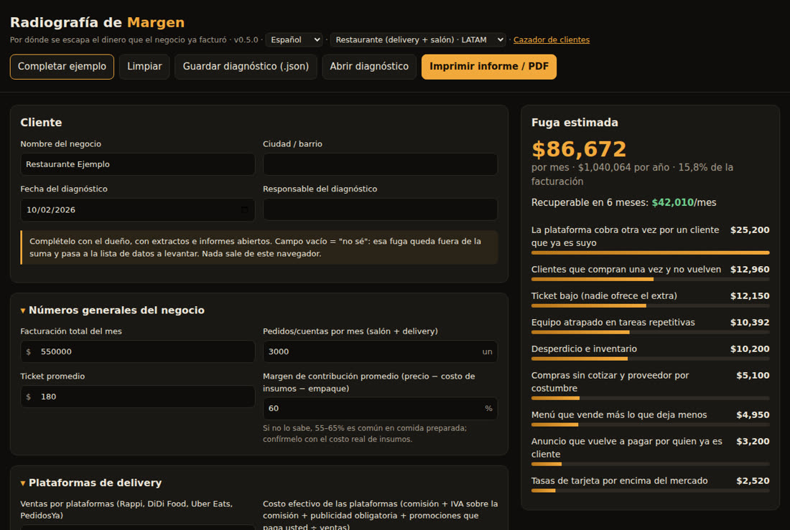
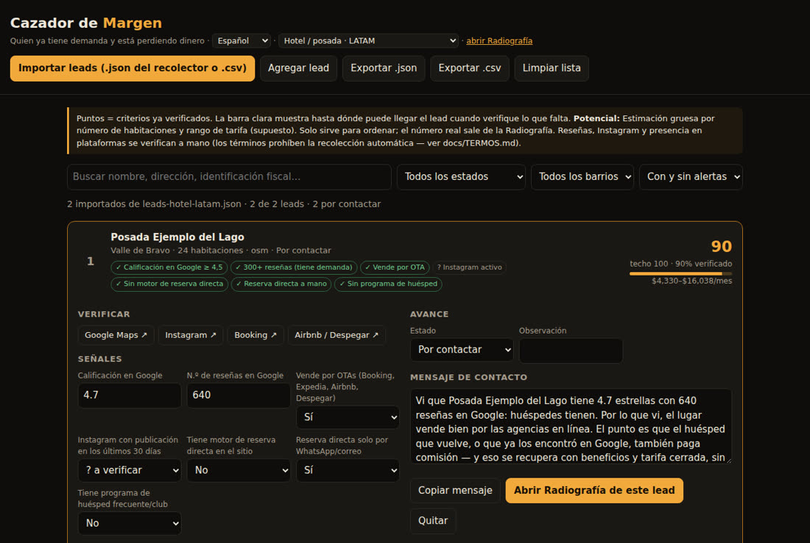

No venda IA ni una app. Muestre en su moneda lo que se está escapando, corríjalo y demuestre cuánto volvió a la caja. Cazador de clientes con datos abiertos, Radiografía con informe en PDF, recetas de corrección y medición — todo en el navegador, sin instalar nada.
La pregunta deja de ser "¿usted necesita IA?" y pasa a ser "¿por dónde se le está yendo el dinero que ya facturó?". El kit cubre todo el camino, del primer contacto a la mensualidad.
Lista los negocios de una colonia o barrio con fuentes abiertas (OpenStreetMap en cualquier país, o el CSV de un registro local como el DENUE), lee el sitio de cada uno y puntúa a quien tiene demanda y está perdiendo dinero. Genera el mensaje de contacto listo.
Se completa con el dueño en 40 minutos: calcula cada fuga en moneda local por mes (en margen, no en facturación), la ordena de la más rápida a la más difícil e imprime el informe "usted está dejando $X al mes".
Para cada fuga, una guía de corrección con camino listo (SaaS) o abierto, checklist y la forma de medir antes × después — lo que sostiene el cobro recurrente.
Cada sector es un paquete de datos (preguntas, fórmulas, cuánto se puede recuperar, cómo medir). Otro idioma es otro mercado, con sus propias plataformas, pagos y reglas. Los paquetes en español vienen en MXN, con México como ejemplo por defecto.
| Sector | 🌎 América Latina (ES) | 🌐 Global (EN) | 🇧🇷 Brasil (PT) |
|---|---|---|---|
| Restaurante | Rappi, DiDi Food, Uber Eats, PedidosYa · IVA sobre la comisión (MX: 25% ≈ 29%) · CoDi/DiMo, QR, Yape/Plin, Bre-B | DoorDash, Uber Eats, Deliveroo · tarjeta | 99Food, Keeta, Rappi |
| Hotel / posada | Booking 15/18/23%, Expedia, Airbnb · Chile sin paridad de tarifas | UE sin paridad (DMA) | Booking, Airbnb |
| Clínica / consultorio | inasistencias, rechazos de aseguradoras · Doctoralia/AgendaPro por suscripción | no-shows, claim denials | inasistencias, rechazos de convenios |
| Salón / barbería | regreso en el ciclo, club · AgendaPro | rebooking, membership | regreso en el ciclo, club |
| Servicios con agenda (genérico) | modelo estándar para cualquier negocio con cita — los perfiles heredan de él | ||
Empezar por la fuga más rápida (casi siempre la tasa de tarjeta) paga la implementación y genera confianza para el resto.
La plataforma cobrando otra vez (comisión + IVA) por un cliente que ya es suyo, tasas de tarjeta, clientes que no vuelven, ticket bajo, desperdicio, compras, menú, mano de obra, anuncios que pagan por quien ya es cliente.
Comisión de la OTA por un huésped recurrente, programa de visibilidad que no se paga, cuarto vacío en temporada baja, huésped que no vuelve, extras, no-show sin cobro, tarjeta y caja.
Inasistencia sin aviso, horario que nunca se agendó, cliente que no vuelve a tiempo, adicional que nadie ofrece, tarjeta — y en la clínica, rechazos de la aseguradora y tratamiento que no empieza.
La Radiografía y el Cazador abren en el navegador, incluso sin conexión. Los datos del cliente no salen de su computadora.
Solo un navegador. En línea por GitHub Pages o descargando el repositorio y abriendo el archivo.
# en línea https://inematds.github.io/raio-x-margem/app/?lang=es # o local git clone https://github.com/inematds/raio-x-margem xdg-open raio-x-margem/app/index.html
Python 3 y Node, sin bibliotecas extra. El recolector de OpenStreetMap funciona en cualquier país; el registro local se descarga como CSV desde el sitio oficial.
python3 --version # 3.10+ node --version # 18+
Búsqueda de sitio/Instagram con Firecrawl (consume créditos, solo con --confirmar) y revisión de señales por IA con su suscripción (claude o codex), sin clave de API.
export FIRECRAWL_API_KEY=... # opcional claude --version # opcional
Ejemplo: restaurantes de la Ciudad de México. Lo que hoy funciona fuera de Brasil está indicado en cada paso.
OpenStreetMap funciona en todo el mundo (--setor alimentacao, hospedagem o servicos). El admin_level de ciudad y colonia cambia según el país: ajústelo con --nivel-cidade / --nivel-bairro. Sume, si quiere, el CSV del registro local — DENUE de INEGI (México), RNT o RUES (Colombia), SII (Chile), SUNAT (Perú) — e impórtelo directo en el Cazador: encabezados comunes en español e inglés (nombre, ciudad, dirección, teléfono, sitio_web, calificación, reseñas…) se reconocen solos. Los recolectores automáticos por registro de cada país están en la hoja de ruta. O todo de una vez: la pantalla Recolectar (python3 coletor/servidor.py) o bash coletor/rodar.sh — lista, une, prioriza por nombre comercial y enriquece.
python3 coletor/osm.py --cidade "Ciudad de México" --setor alimentacao --saida dados/osm-cdmx.json # una sola colonia (los niveles cambian por país; revíselos en openstreetmap.org) python3 coletor/osm.py --cidade "Ciudad de México" --bairro "Roma Norte" --nivel-cidade N --nivel-bairro N --saida dados/osm-roma.json
¿Pedido propio? ¿WhatsApp a la vista? ¿Programa de lealtad? ¿Enlaces a plataformas? El script lee el sitio respetando el robots.txt; la IA con su suscripción revisa las señales. Detecta enlaces a Rappi, DiDi Food, Uber Eats y PedidosYa; lo que no aparezca en el sitio se verifica a mano en el Cazador.
python3 coletor/sitios.py --entrada dados/osm-cdmx.json --saida dados/leads-cdmx-enr.json \ --setor alimentacao --limite 30 --ia claude # --buscar firecrawl --confirmar para encontrar sitios
Calificación y reseñas en Google, Instagram activo y presencia en las apps de delivery se verifican con un clic (la pantalla abre la búsqueda lista). El puntaje solo cuenta lo verificado; la barra clara muestra el techo.
app/cacador.html?lang=es → Importar leads → dados/leads-cdmx-enr.json (y/o el .csv del registro)
Solo cita lo que fue verificado ("4,8 estrellas con 3,000 reseñas…") e invita a un diagnóstico de 40 minutos sin costo. Marque el avance hasta la Radiografía.
Copiar mensaje → Abrir Radiografía de este lead
Con la liquidación de las plataformas y el estado de la terminal abiertos (pida la tasa real: ninguna plataforma publica una única). Campo vacío = "no sé": queda fuera de la suma y pasa a la lista de datos a levantar. Guarde el diagnóstico (.json) — es la base "antes". Paquetes en MXN; cambie la moneda y los ejemplos para su país.
app/index.html?lang=es&setor=restaurante-latam → Imprimir informe / PDF + Guardar diagnóstico
Máximo 3 recetas, empezando por la más rápida. El botón Generar propuesta de la Radiografía arma la propuesta con los números del cliente y sugiere precios dentro de la regla: implementación repartida en 6 meses + mensualidad ≤ 1/3 de lo recuperable. Los modelos de contrato y de tratamiento de datos siguen la ley brasileña — adáptelos con un abogado local.
app/proposta.html?lang=es → Imprimir / PDF # textos del kit comercial en kit-comercial/, en portugués
Cada receta tiene camino listo (SaaS) o abierto, checklist y lo que no se debe hacer — por ejemplo, nunca un QR del canal propio dentro del pedido de la plataforma. En pagos, compare la terminal con el pago instantáneo del país: CoDi/DiMo sin costo para el comercio en México, QR interoperable en Argentina, Yape/Plin en Perú, Bre-B en Colombia (costo aún no definido).
docs/es/modulos/ cardapio-vivo · aquisicao · cobranca · marketing-local · canal-proprio · servicos-agenda · hotel-*
El informe ya trae "cómo vamos a medir" para cada fuga: base antes, métrica después y ventana. Bono por resultado solo sobre lo que se puede atribuir (la tasa de tarjeta, por ejemplo). Si usa WhatsApp Business Platform, calcule con la tabla oficial de Meta de su país: desde el 01/10/2026 también se cobran los mensajes de servicio arriba de 1,000 al mes. El Panel de Recuperación abre el diagnóstico guardado, recibe los números de cada mes y muestra, fuga por fuga, cuánto volvió a la caja y cuánto falta para la meta.
app/painel.html?lang=es → Abrir diagnóstico (el .json del paso 5) → Agregar mes # antes × después, % de la meta, acumulado y bono
El kit no raspa Google Maps, Instagram ni las apps de delivery (los términos lo prohíben), nunca usa el contacto de clientes que entrega la plataforma y solo guarda datos de empresa. La prospección B2B sigue la ley de cada país: en Colombia los datos corporativos quedan fuera de la Ley 1581; en Argentina se permiten datos de fuentes de acceso público irrestricto, con derecho de exclusión; en México la nueva LFPDPPP (2025) exige aviso de privacidad y opción de oposición; en Chile la Ley 21.719 entra en vigor el 01/12/2026, posiblemente aplazada; en Perú rige el nuevo reglamento desde 2025. Los datos de salud son datos sensibles en toda la región, y en México la publicidad médica puede requerir aviso o permiso de COFEPRIS (dato de proveedor, verifique la norma). Detalles en docs/TERMOS.md (en portugués) y docs/mercados/latam-pesquisa-2026-10.md (notas de investigación, en portugués).
Existen herramientas abiertas listas para raspar Google Maps e Instagram. El kit no las usa: los términos lo prohíben y el riesgo cae en usted y en su cliente. Para cada fuente hay un camino que trae la misma información sin romper reglas.
Orden de preferencia: 1) dato del propio dueño (lo exporta de su panel) · 2) registros públicos oficiales y OpenStreetMap · 3) señal indirecta (el sitio del negocio enlaza apps, Instagram, motor de reservas) · 4) API oficial con autorización · 5) verificación asistida (~1 min por lead, solo los mejores).
| Fuente | Daría | Qué lo impide | En su lugar |
|---|---|---|---|
| Google Maps | calificación, reseñas, teléfono, horario | Términos de Maps Platform 3.2.3 (sin raspado) | verificación en el Cazador · Places API (solo place_id) · Perfil de Empresa del dueño |
| actividad, publicaciones, seguidores | Términos de Instagram y Meta (recolección automatizada) | @ del sitio · verificación · API Business Discovery · Estadísticas del dueño | |
| Apps de delivery | presencia, calificación, precios | términos de cada app | enlace en el sitio del restaurante · búsqueda web · reportes del portal de socios |
| Sitios de reserva | presencia, calificación, precios | Booking A15.2, Airbnb 11.1, Tripadvisor | registros de turismo · sitio del hotel · extranet de la OTA con el dueño |
Recolección automática, toda con fuentes abiertas: la pantalla Recolectar (con python3 coletor/servidor.py) o un comando: bash coletor/rodar.sh --setor restaurante --uf PR --cidade Curitiba. Los recolectores de registros hoy cubren Brasil; en otros países use OpenStreetMap más un CSV del registro local.
Totales calculados por el motor con los valores de ejemplo de cada paquete (México, MXN), botón "Completar ejemplo". Son ejemplos, no promedios del mercado. El primer piloto de campo se hizo en Brasil.


Costo efectivo de las plataformas con IVA sobre la comisión y publicidad obligatoria (ejemplo: 32% contra 8% del canal propio), tarjeta de 4,06% contra 2,8% negociable, retención, ticket y menú. Ejemplo: $86,672/mes de fuga, $42,010 recuperables.
Comisión de la OTA (Booking 15/18/23%, Airbnb 16% en México) sobre huéspedes recurrentes, programa de visibilidad, temporada baja, no-show sin cobro y extras. Ejemplo: $140,818/mes de fuga en 9 puntos, $72,703 recuperables.
Inasistencia sin aviso (referencia chilena de 16,5%, dato antiguo), horario sin agendar, regreso a tiempo y rechazos de aseguradoras. Ejemplos: clínica $68,682/mes ($33,072 recuperables); salón $34,353/mes; servicios genérico $31,147/mes.
Versión actual: 0.8.1 — 15 paquetes (5 sectores × 3 mercados), más de 60 pruebas automáticas.